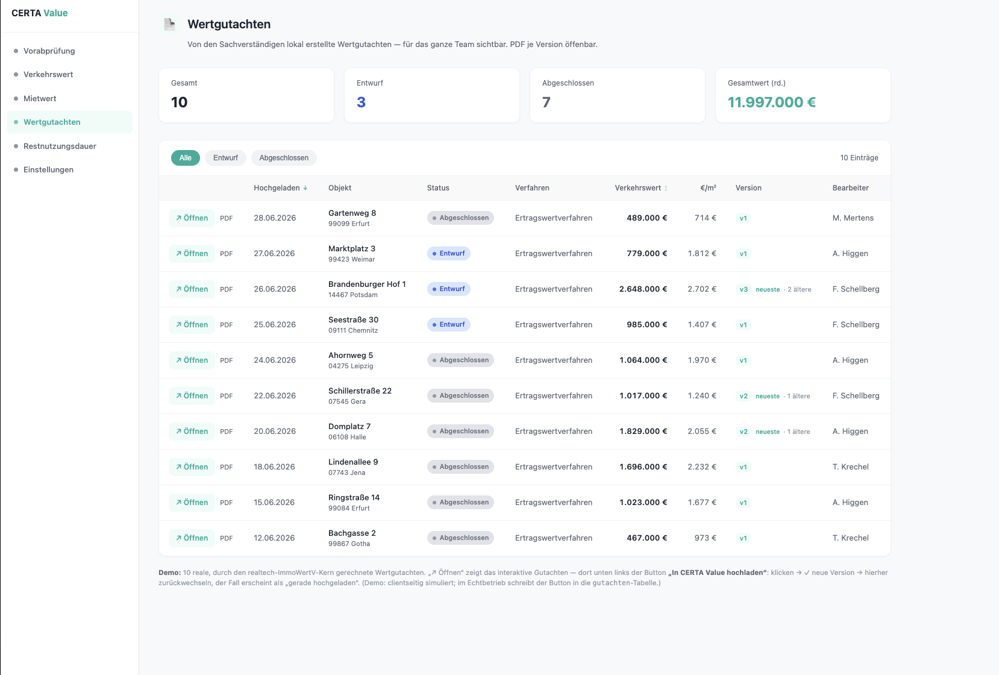

Ein Befehl, ein Fallordner: Der Skill liest die Unterlagen aus, rechnet nach ImmoWertV 2021 und legt jede wertkritische Größe dem Sachverständigen zur Entscheidung vor. Beispiel: MFH Biereyestraße 8, Erfurt (Ertragswertverfahren).
Der Gutachter bekommt den Objektordner zugeteilt und startet den Skill darauf. Die Unterlagen müssen nur im Ordner liegen — die Benennung erkennt der Skill selbst. Schalte zwischen vorher und nachher um und klick auf einen Ordner, um seinen Inhalt zu sehen:
Links alles, was der Skill selbst aus den Unterlagen und den ImmoWertV-Tabellen zieht. Rechts die wenigen wertkritischen Größen, die der Sachverständige heraussucht, prüft und freigibt — Vier-Augen-Prinzip. Erst nach dieser Freigabe ist es ein Gutachten.
| Adresse | Biereyestr. 8 · Flurkarte / Grundbuch |
| Baujahr | 1925 · Exposé / Kundenangabe |
| Grundstücksfläche | 513 m² · Flurkarte (amtlich) |
| Wohneinheiten | 7 · Mieterliste |
| Mieten / Roherträge | je Einheit · Mieterliste |
| Gesamtnutzungsdauer | 80 J · ImmoWertV Anlage 1 |
| Bewirtschaftung | Verwaltung · Instandhaltung · Mietausfall · ImmoWertV Anlage 3 |
| Verfahrenswahl | Ertragswert · aus Objektart (MFH) |
| Wohnfläche | Vorschlag 685 m² → aus Wohnflächenberechnung bestätigen |
| Bodenrichtwert | Vorschlag 345 €/m² (Stichtag 01.01.26) → Auszug/GMB bestätigen oder Stichtag wählen |
| Liegenschaftszins | Vorschlag 4,0 % (IVD) → objektspezifisch aus GMB-Matrix |
| Restnutzungsdauer | Vorschlag 16 J → bestätigen größter Werthebel |
| WGFZ-Richtwert | Vorschlag 1,5 → aus BRW-Auskunft |
| Abschläge | WEG-Abschlag · Instandhaltungsstau · Regionalfaktor — fallspezifisch |
Der Lauf erzeugt zwei Dateien: das interaktive Wertgutachten (am Bildschirm Arbeitsfassung mit Prüfvermerken, beim Drucken sauberes Kunden-PDF) und den Live-Rechner. Klick öffnet das echte Beispiel Biereyestraße:
Das Gutachten: Ergebnis → Bodenwert → Verfahrensrechnung → Plausibilisierung → Schluss. Prüfen, Text direkt editieren, drucken. ↗ Beispiel öffnen
Live-Rechner: alle Eingangsgrößen als Felder, Verkehrswert rechnet sofort neu. Parameter drehen und kopieren. ↗ Beispiel öffnen
Drucken (PDF) → in CERTA Value hochladen. Fertig.
↺ Neuer Entwurf → wieder prüfen → freigeben (drucken + hochladen).
wichtigIn CERTA Value wird jede Version gespeichert — Entwürfe und freigegebene Fassungen bleiben als v1, v2, v3 … nachvollziehbar.
Das Gutachten entsteht lokal beim Sachverständigen. Aus der fertigen Datei genügt ein Klick „In CERTA Value hochladen" — danach liegt der Fall versioniert in der Team-Plattform: für alle sichtbar, jede Version als PDF öffenbar und an die übrigen CERTA-Value-Module (Vorabprüfung · Verkehrswert · Mietwert · Restnutzungsdauer) angebunden.
